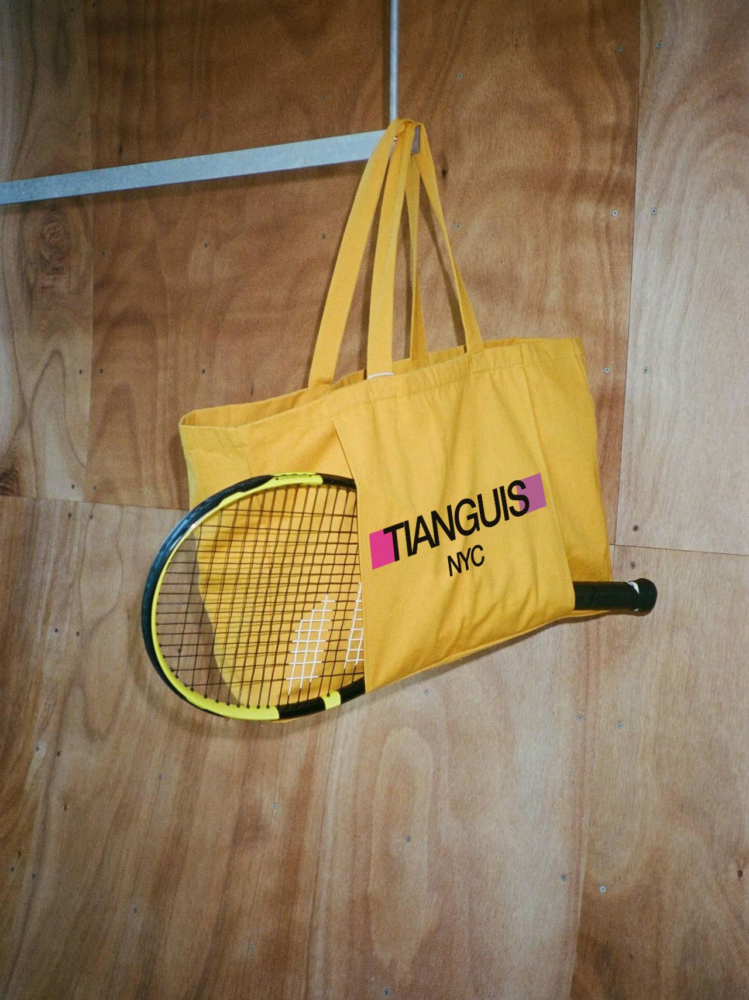
The logomark draws from ancient Zapotec symbols and engravings. The expansive color palette keeps the brand visually dynamic and relevant year-round.
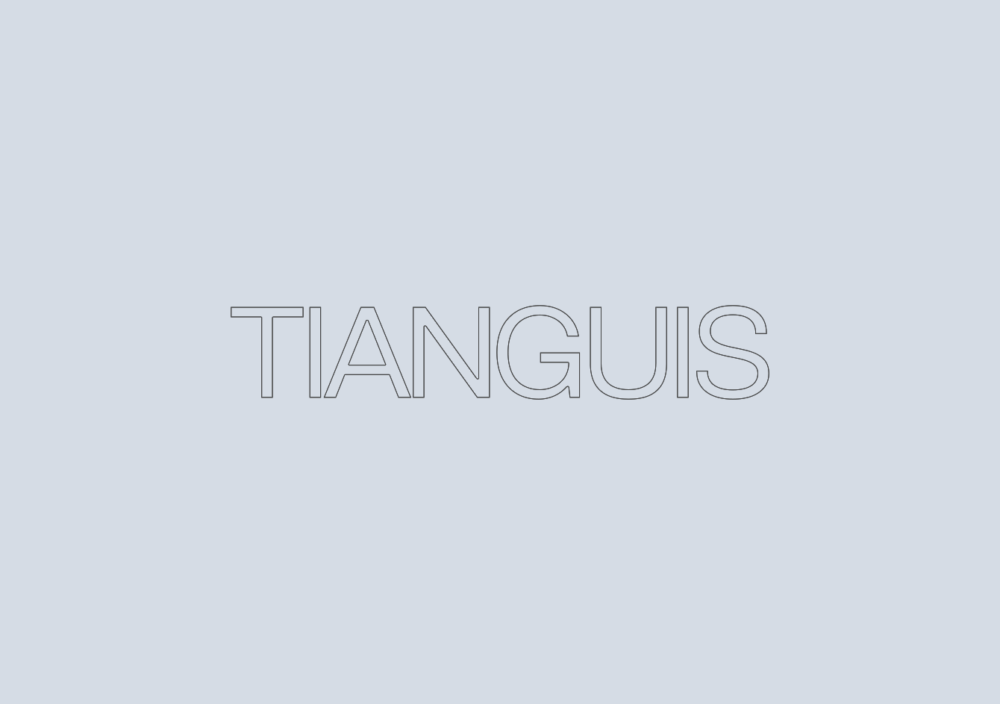

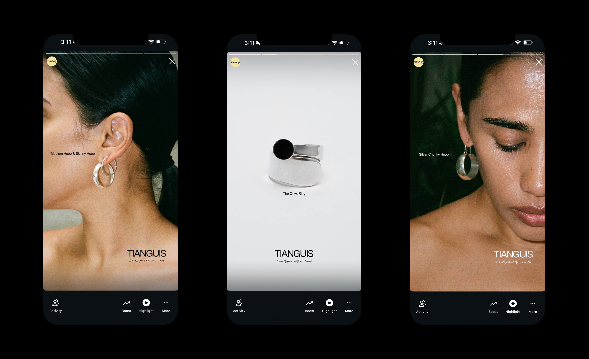
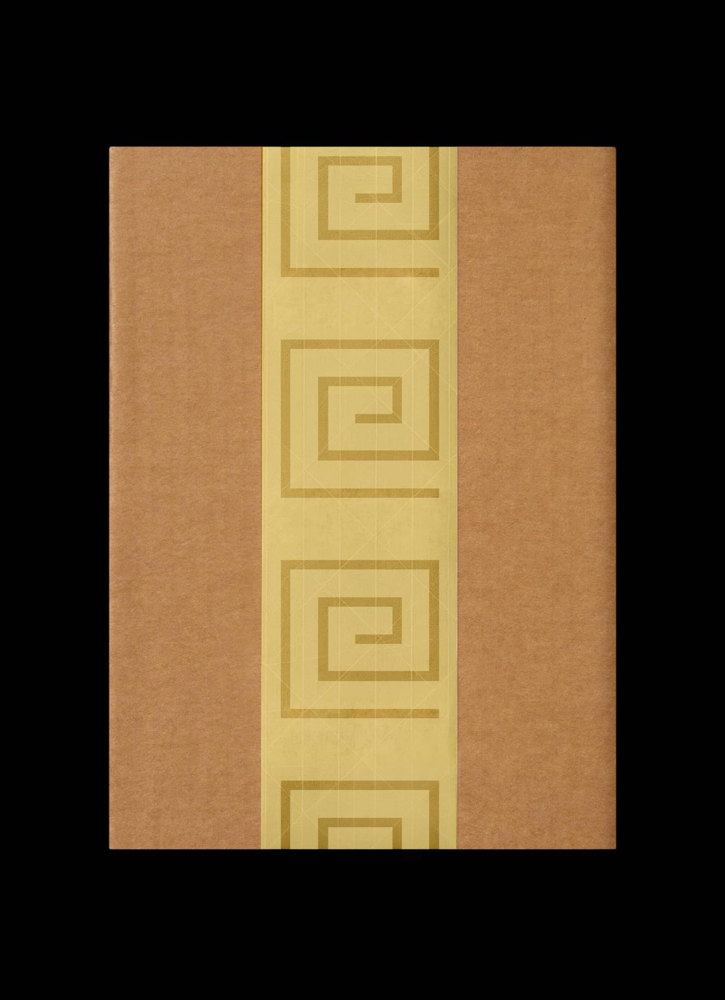
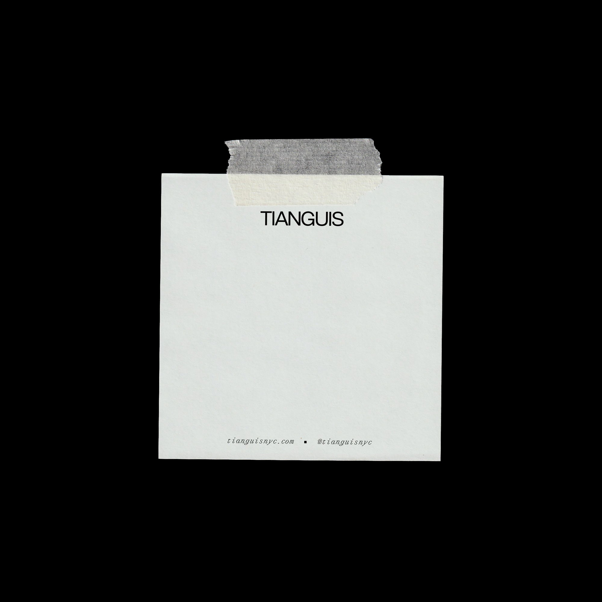
The brand identity extended across stationery, packaging, and event collateral, with all photography art directed and shot by me.
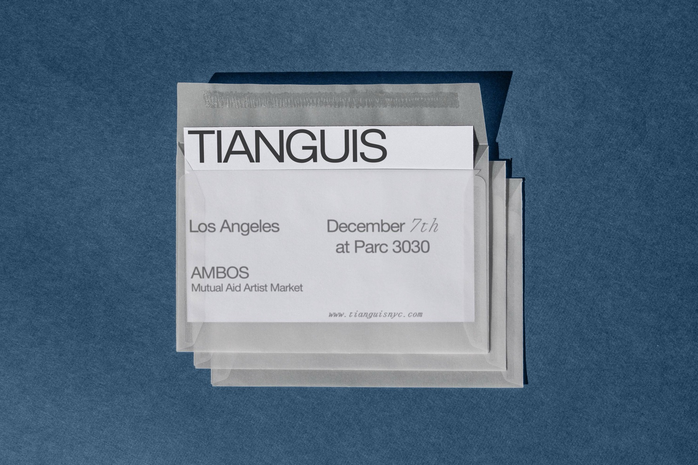
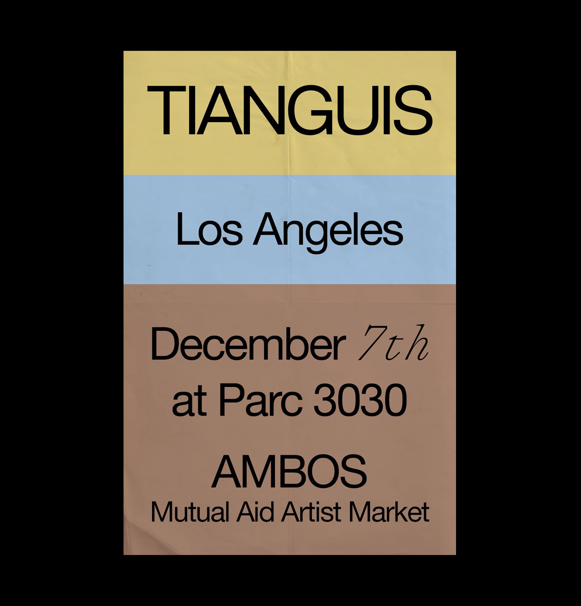
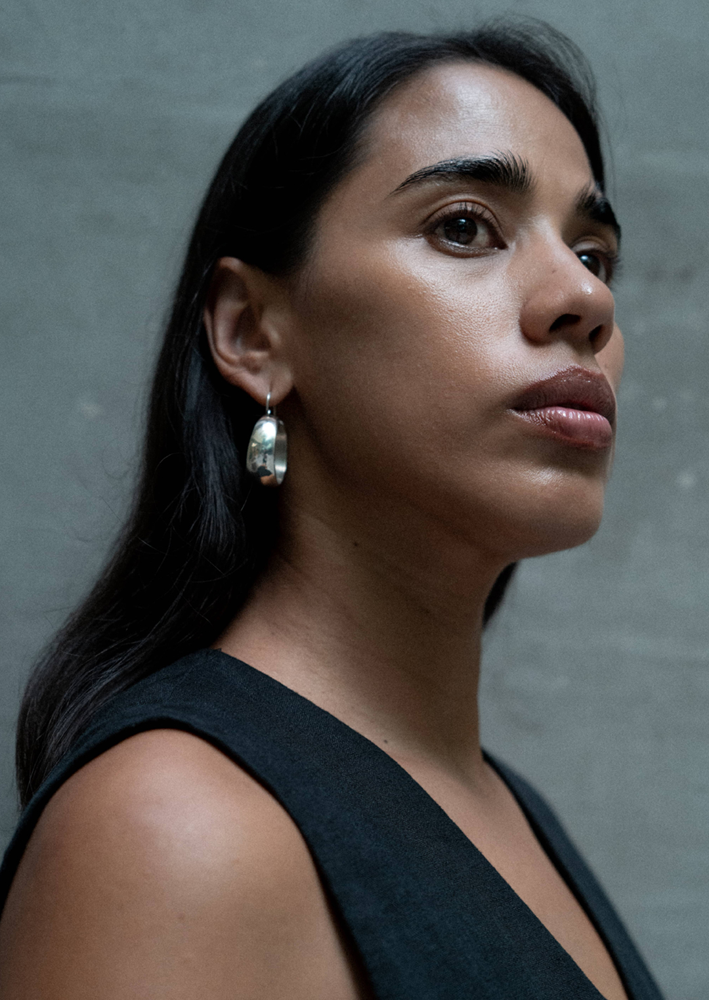
For The Silver Edit drop, I produced a photoshoot and a video featuring an interpretative piece by Mexican dancer Marianna Escobedo.
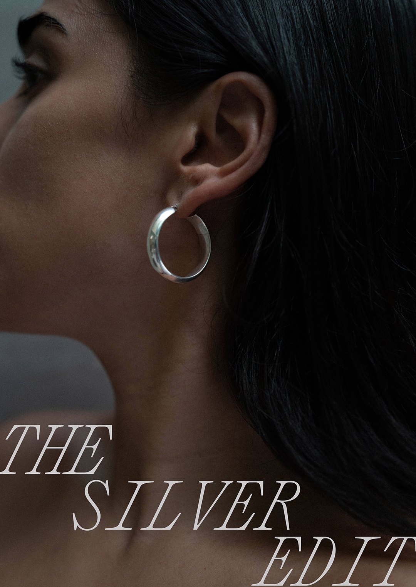
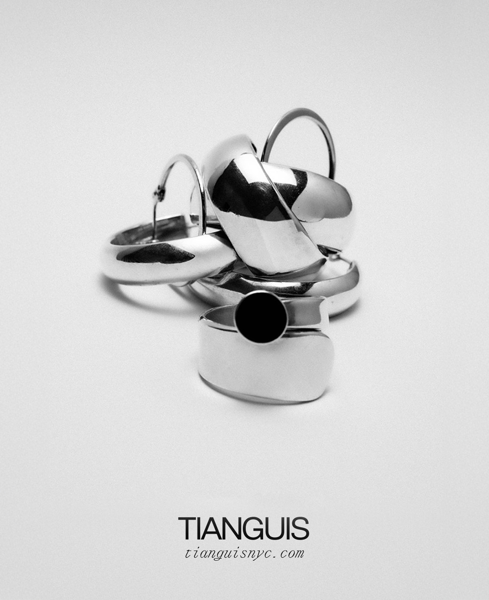
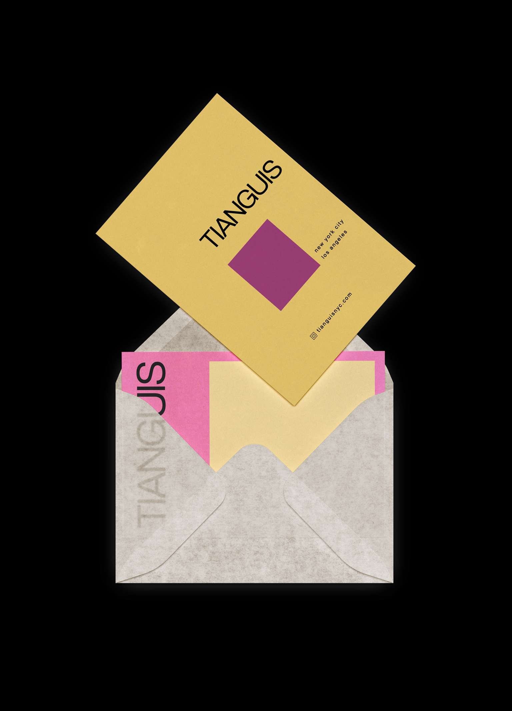